Scroll
We make people of mettle, one day at a time.
The Mettle Method is a community for people who want to become stronger, steadier and wiser, through a small, daily practice and the company of others keeping it.
One lesson a day. Kept, not just read.
Every morning, members receive one thing worth knowing: a mental model, an idea from philosophy, or a practical skill.
Each lesson takes about three minutes and ends with one way to use it that same day. We count every day you show up. Over months the lessons stack into a way of thinking, and the days stack into a different person.
Alongside the lessons we make tools for the practice: journals, templates and decks, built to be used daily, not admired.
Not for everyone.
For the ones who stay, and hold the line for each other.
Because everything left alone falls apart.
Attention scatters. Habits slip. Bodies soften. Promises fade. That is entropy, and it works on everyone.
The ancients answered it with discipline: small acts repeated until they became character. The Stoics wrote notes to themselves every night. Monks kept hours. Soldiers drilled. None of it was dramatic; all of it was daily.
We think that answer still works. Most self-help sells a feeling. We would rather build a practice, and a room full of people who keep it with you.
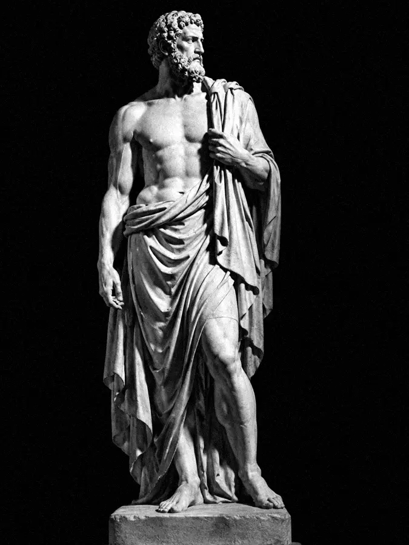
Obey the processThe first rule of the order
The creed
- I
Obey the process
Results are not ours to command. The daily work is. Do it, and let the outcome come.
- II
One thing, every day
A single lesson, learned and used, beats a library skimmed. Small, daily, without exception.
- III
Control what is yours
Your choices, your effort, your word. Everything else you accept with a straight back.
- IV
Break, then rebuild
Every pillar cracks. We mend it and stand taller where it broke.
- V
Keep the flame together
No one stays disciplined alone. We hold each other to the practice.
Built to outlast us.
Empires fell. The temples kept standing. So does a practice kept daily.
What we build
Mind
Think clearly. Mental models, philosophy, the art of deciding well.
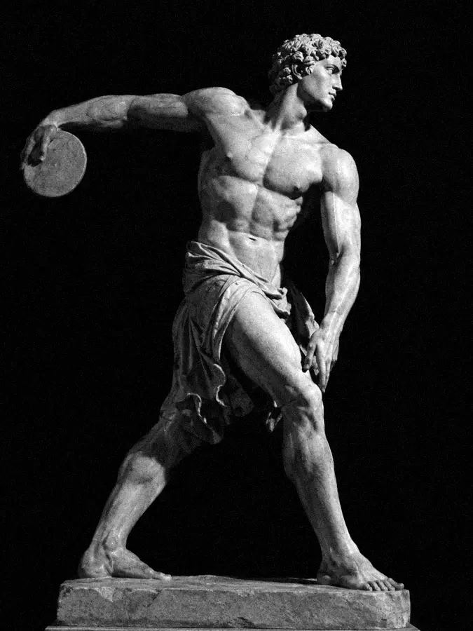
Body
Train the vessel. Strength, sleep, food and the habits beneath them.
Faith
Hold to what matters. Meaning, virtue, gratitude, the long view.
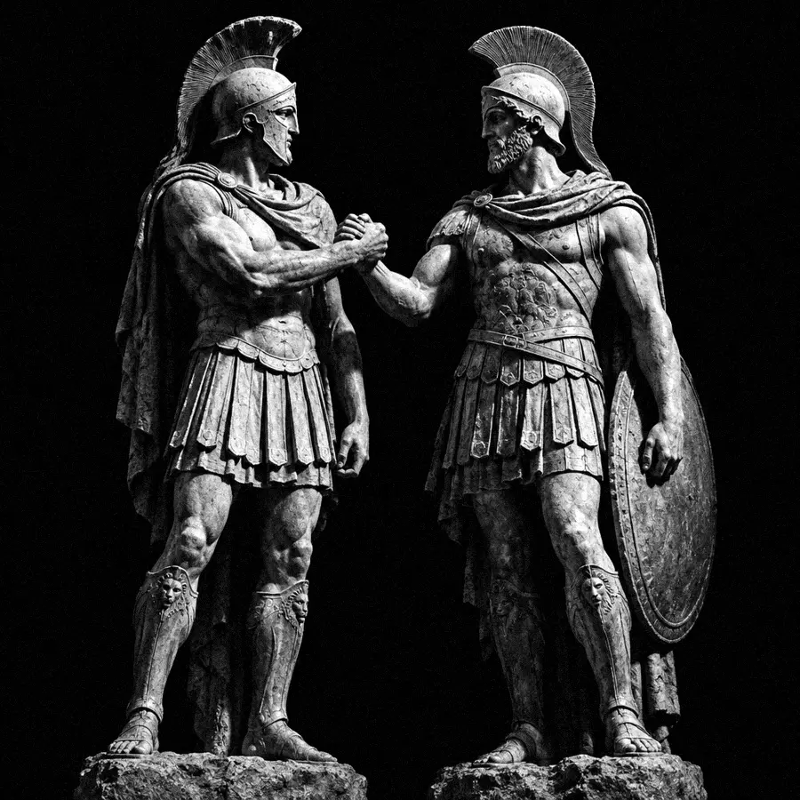
Relationships
Keep your word. Trust, conversation, family, the people around you.
They are the four medallions on our seal: the open book for Mind, the lightning bolt for Body, the star for Faith and the linked rings for Relationships. Around them runs the Greek key, the old sign for something that never ends.
- IThe open bookMind: learning that never stops.
- IIThe lightning boltBody: energy, strength, force.
- IIIThe starFaith: the fixed point you steer by.
- IVThe linked ringsRelationships: bonds kept on purpose.
- VThe eternal flameThe daily practice, kept lit on a tripod shaped like an M.
- VIThe cracked pillarThe breaks we mend. The Greek key around it all never ends.
Nine ranks, earned in days
Every day you keep the practice counts toward your rank. Nothing can be bought. Each insignia grows richer than the one before, from a single sword to the crowned seal of the Sophos.
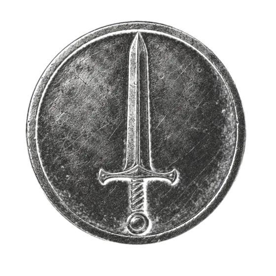
I · day 1Tiroof the Outer Court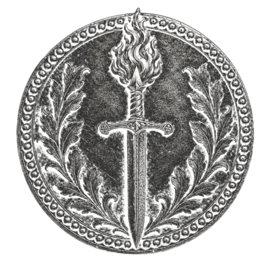
II · day 7NeophytosKeeper of the First Flame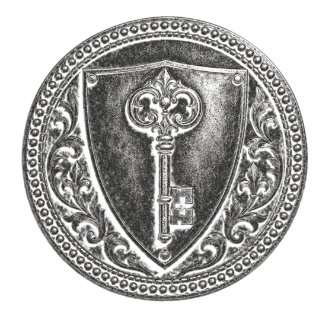
III · day 21Discipulusof the Lettered Hall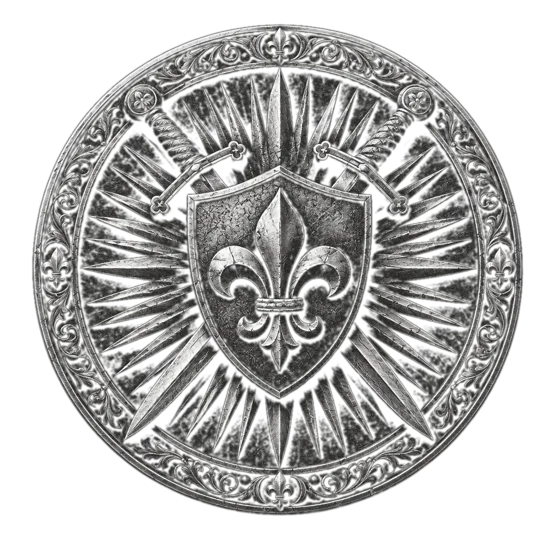
IV · day 40HoplitesBearer of the Iron Vow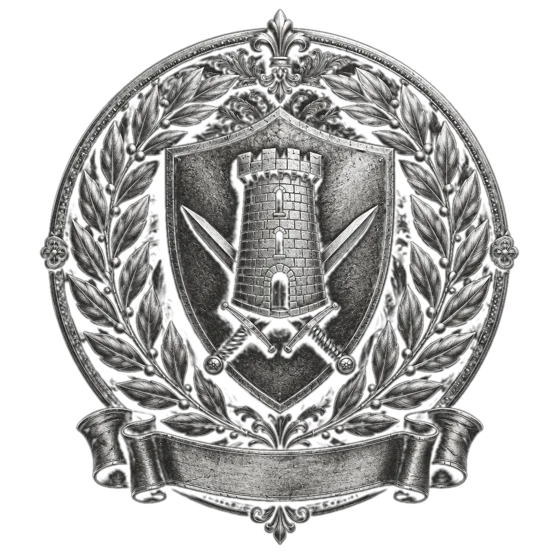
V · day 100CenturioWarden of the Hundred Days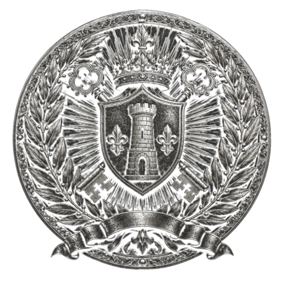
VI · day 180PraefectusSteward of the Four Pillars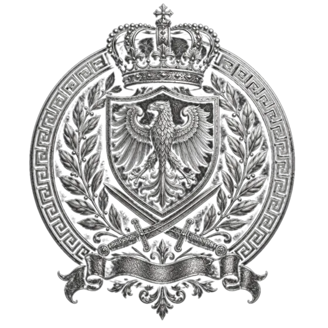
VII · day 300StrategosCommander of the Unbroken Line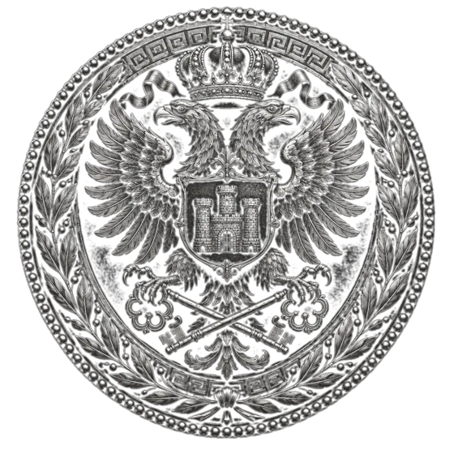
VIII · day 500ArchonLord of the Temple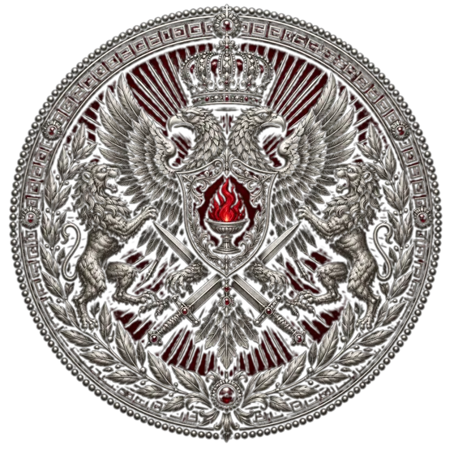
IX · day 1000SophosThe Sage Who EnduredPower is a habit.
Strength is what is left after a thousand ordinary mornings.
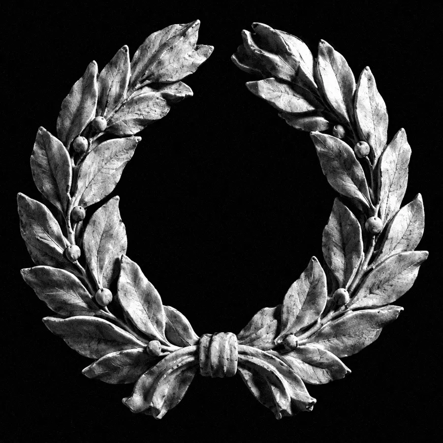
IV · How to joinFour steps into the order
- 01
Take the oath
Sign up with Google and commit to one lesson a day. Day 1 starts the moment you join.
- 02
Learn, then use
Each morning: one model, idea or skill, explained in three minutes, with one way to use it today.
- 03
Keep your count
Every day you show up is counted. Miss one and you begin again. The streak is the proof.
- 04
Stand with the order
Share what you practised, hold others to theirs, and rise through the ranks as your days add up.
Learn, use, count, gather. Then round again, every day. Skip the practice and the day is not counted. Miss a day and the wheel begins again at Day I.
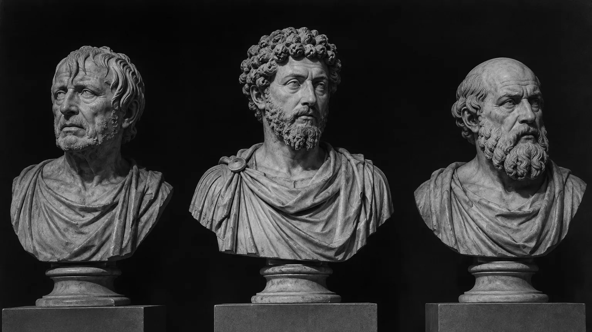